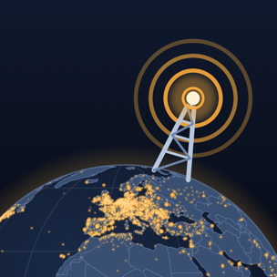

Radio Globe
Live radio from around the world, on a globe
Spin the globe and tap a station to hear it. Tap a country to list its stations; the globe and the list always show the same thing. Thousands of stations come from the community Radio Browser directory.
- Plays in the background, with controls on the lock screen
- Shows the song playing, where the station sends it
- A filter for sound quality, popularity and language, a search, and Random
- Day and night on the globe, with each station's local time
- A sleep timer, favorites, and a card for every station with its other streams and similar stations
Try it on Android
Radio Globe is being tested with friends before it reaches the stores. The newest Android build is always at the link below.
Open the link in the phone's browser, then open the downloaded file. The phone asks once to allow installs from the browser; that is Android's normal step for an app that doesn't come from the Play Store. Later builds install over the earlier ones and keep your favorites.
iPhone testing comes through TestFlight. Write in if you'd like to be on the list.
Feedback
In the app, open a station's card and tap Feedback at the bottom. It shows what gets sent, the app's version and its diagnostic log, and opens the share sheet so you can add a note and send it. Or write to support@jukenzie.com.
Privacy
Radio Globe has no account and sends nothing about you to Jukenzie. The station list comes from Radio Browser, streams come straight from the broadcasters, and your favorites stay on the phone. The diagnostic log is sent only when you send it.